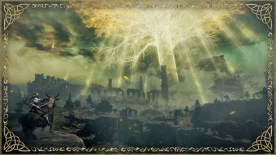
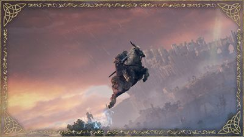
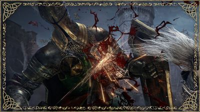

Key features
- Journey through the Lands Between, a new fantasy world created by Hidetaka Miyazaki, creator of the
influential DARK SOULS video game series, and George R. R. Martin, author of The New York Times best-
selling fantasy series, A Song of Ice and Fire.
- Unravel the mysteries of the Elden Ring’s power. Encounter adversaries with profound
backgrounds, characters with their own unique motivations for helping or hindering your progress,
and fearsome creatures.

- ELDEN RING features vast fantastical landscapes and shadowy, complex dungeons that are
connected seamlessly.
- Traverse the breathtaking world on foot or on horseback, alone or online with other players, and
fully immerse yourself in the grassy plains, suffocating swamps, spiraling mountains, foreboding castles
and other sites of grandeur on a scale never seen before in a FromSoftware title.

- ELDEN RING features vast fantastical landscapes and shadowy, complex dungeons that are connected
seamlessly.
- Traverse the breathtaking world on foot or on horseback, alone or online with other players, and fully
immerse yourself in the grassy plains, suffocating swamps, spiraling mountains, foreboding castles and
other sites of grandeur on a scale never seen before in a FromSoftware titl
